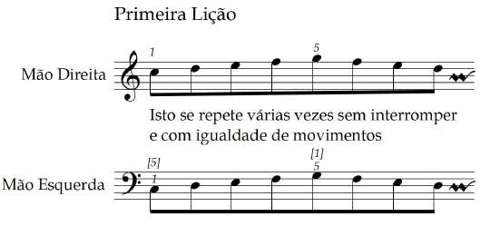
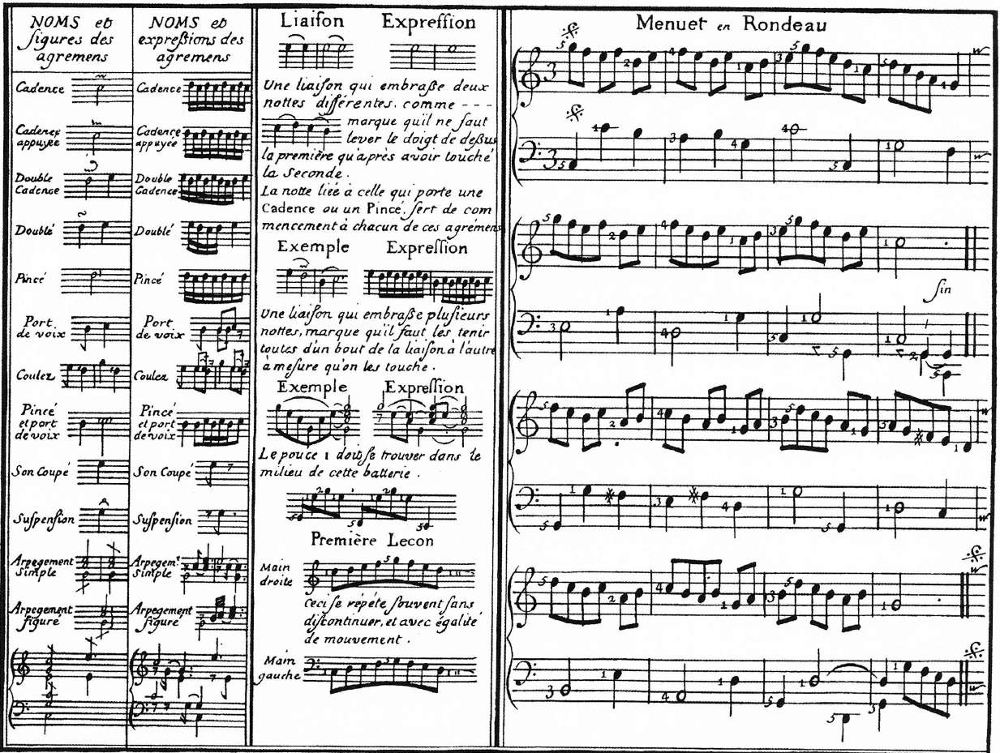

Jean-Philippe Rameau · Paris, 1724 · De la mechanique des doigts sur le clavessin
Jean-Philippe Rameau (Dijon, 1683 — Paris, 1764), compositor, teórico,
organista e cravista. Sua "Mecânica" é considerada
"possivelmente a mais precisa descrição sobre técnica francesa de teclado jamais
escrita" — analítica e racional, em sintonia com os primeiros anos do Iluminismo.
★ Frase-síntese de Rameau
"Não é suficiente sentir os efeitos de uma ciência ou arte; é necessário compreendê-los de um modo que os torne inteligíveis." — Rameau, prefácio ao Tratado de Harmonia (1722)
"A perfeição do toque ao Cravo consiste principalmente em um movimento de dedos bem conduzido.
[...] A faculdade de andar ou de correr vem da flexibilidade da articulação do joelho; já a
de tocar o Cravo, depende da flexibilidade dos dedos em suas raízes."
— Rameau, abertura
Todos andamos quase igualmente bem, porque o exercício é constante; quase ninguém move
bem os dedos para o teclado, porque o exercício é raro. Pior: "nossos hábitos particulares
fazem os dedos adquirirem movimentos tão contrários àqueles que se exigem ao cravo, que essa
liberdade é constantemente cerceada".
★ Uma psicologia do estudo
Rameau é o primeiro a notar que o esforço expressivo prejudica a execução: "Se formos
minimamente sensíveis aos efeitos dessa arte, faremos esforços para transmitir o que sentimos,
e isso só poderá levar a uma tensão prejudicial à execução."
"Um exercício frequente e bem compreendido seja o autor infalível da perfeita execução ao
Cravo."
Parte 1
Posição ao instrumento
Numeração dos dedos
Mesma numeração de Couperin: 1 = polegar, 5 = mínimo.
O assento e os cotovelos
"Deve-se, primeiramente, sentar-se ao Cravo de maneira que os cotovelos estejam mais elevados
do que o nível do teclado e que a mão possa cair sobre ele unicamente pelo movimento natural
da ligação com o pulso."
Os cotovelos acima do nível do teclado — mas nunca exageradamente. Posição
tal que o 1 e o 5 possam se posicionar na borda das teclas.
★ Detalhe genial
"Os cotovelos recaiam tranquilamente para os lados, em sua situação natural, posição que
precisa ser bem observada e que não se deve jamais modificar, salvo por uma necessidade
absoluta."
Esse "ponto fixo natural" do cotovelo é o que dá estabilidade ao toque.
Toda pessoa, "de qualquer tamanho que seja", encontra sua posição apenas ajustando o assento.
Os dedos curvados
"O 1. e o 5., estando na borda das teclas, levam os outros dedos a curvarem-se" — ao deixar
cair a mão, os dedos arredondam-se naturalmente.
O pulso flexível
"A articulação do pulso deve sempre ser flexível. [...] A mão que por este meio se encontra,
por assim dizer, como morta, serve somente para sustentar os dedos que estão a ela ligados."
"O movimento dos dedos origina-se em sua raiz, isto é, na articulação que os liga à mão e jamais em outros lugares." A mão move-se na articulação do pulso, o braço no cotovelo.
2
Princípio da economia
"O maior movimento só deve ocorrer na medida em que um menor não seja suficiente" — talvez a frase mais influente do tratado.
3
Independência total
"É essencial que cada dedo tenha seu movimento próprio e independente de qualquer outro" — mesmo quando se desloca a mão.
4
Cair, não bater
"É importante que os dedos caiam sobre as teclas e não que as batam. É necessário que eles fluam, por assim dizer, de um a outro, em sucessão."
★ Compare com Couperin
Rameau, como Couperin, valoriza o legato e a
leveza. A diferença é o tom: Couperin é poético; Rameau, mecanicista — mas chegam ao mesmo
ideal sonoro.
Parte 3
A Primeira Lição — cinco dedos sobre cinco teclas
"É preciso, no momento, dispor os cinco dedos da mão sobre as cinco notas ou
teclas consecutivas."
Posição inicial
12345
Cinco dedos sobre cinco teclas brancas consecutivas (Do-Ré-Mi-Fá-Sol).
Mão direita: 5 dedos sobre Dó-Ré-Mi-Fá-Sol
Exemplo · Primeira Lição (transcrição UFRJ)

"Isto se repete várias vezes sem interromper e com igualdade de movimentos." Mão direita inicia com dedo 1, termina com 5; mão esquerda começa em 5, termina em 1.
A Primeira Lição em fac-símile (1724)
Na tabela original publicada com as Pièces de clavecin (1724), Rameau apresenta:
ornamentos com seus nomes, expressões e exemplos; a Première Leçon (a Primeira
Lição que estamos estudando); o Menuet en Rondeau recomendado como primeira peça.

Tabela original — ornamentos, Première Leçon e Menuet en Rondeau↗ clique para ampliar
Como praticar
Afundar com o 1 ou com o 5 a tecla sobre a qual ele se encontra, sem que
nenhum outro dedo ou a mão faça o menor movimento.
Passar a seu vizinho, e assim de um ao outro.
Coordenação crítica: "aquele que acaba de afundar uma tecla a deixe no
mesmo instante que seu vizinho afunde uma outra; pois o levantar de um dedo e o tocar de
um outro devem ser executados no mesmo momento."
"Não pese jamais o toque de seus dedos pelo esforço de sua mão; que seja o contrário: sua
mão que, sustentando seus dedos, deixa seu toque mais leve. Isso tem uma grande consequência."
★ A igualdade dos movimentos
"Observe a grande igualdade de movimentos entre cada dedo e, principalmente, não precipite
jamais esses movimentos, pois a leveza e a velocidade só são obtidas através dessa igualdade
de movimentos. Com frequência, por se apressar demasiadamente, foge-se daquilo que se
procura."
Resistência das teclas
"Que o teclado sobre o qual se exercita não seja considerado leve demais. Mas, à medida que
os dedos se fortificam em seus movimentos, podemos apresentar-lhes um teclado menos leve e
chegar gradualmente a fazê-los tocar as teclas mais pesadas."
Praticar com as duas mãos
Primeiro cada mão individualmente; depois juntas. "Começa-se com uma
mão antes da outra com a quantidade de notas que se deseja, ora mais, ora menos; enfim,
faz-se isso de todas as maneiras possíveis."
O resultado dessa Lição:
Habituar a mão a sustentar os dedos.
Dimensionar as distâncias entre dedos às distâncias das teclas.
Proporcionar a cada dedo seu próprio movimento.
Igualar forças, pesos e movimentos entre dedos.
Adquirir movimentos iguais e contrários entre as mãos.
Após a Primeira Lição, pode-se aprender o pequeno Minueto em Rondó incluído
na tabela do tratado, "tendo-se tomado o cuidado de marcar os dedos e de excluir os
ornamentos".
Parte 4
Rolamentos e baterias
Rameau introduz dois conceitos técnicos:
Rolamento roulement
Passagem rápida pelas notas conjuntas da Lição — uma escala. Para rolamentos longos, é necessário a passagem do polegar.
Bateria batterie
Quando as notas da Lição são tocadas em saltos (notas disjuntas) — um acorde quebrado.
A passagem do polegar
"Para continuar um rolamento mais alongado do que aquele da Lição, é preciso somente se
acostumar a passar o 1 sob o outro dedo que se queira, e passar um desses outros dedos sobre
o 1. Esse método é excelente, sobretudo quando aí se encontram sustenidos e bemóis."
★ Rameau e o polegar
Diferentemente de Couperin (que prefere o cruzamento do 3 sobre o 2 ao estilo antigo),
Rameau só prescreve dedilhados modernos — em paralelo com o desenvolvimento
de J. S. Bach na Alemanha. A passagem do polegar é central em sua técnica.
"Evite, tanto quanto possível, tocar um sustenido ou bemol com o 1 ou 5, sobretudo nos
rolamentos; e de tal maneira que o 1 se encontre sobre a tecla que precede esse sustenido
ou esse bemol, pois isso pode facilitar sua execução."
Rameau apresenta inovação técnica em duas peças suas:
★ Les Tourbillons — rolamento entre as mãos
"As mãos passam uma sobre a outra, mas é preciso observar bem que o som da primeira
tecla sobre a qual uma das mãos passa seja tão ligado ao som precedente, como se
estivessem sendo tocados por dedos de uma mesma mão." A letra D indica
mão direita (droite), G a esquerda (gauche).
Les Tourbillons — gravações para comparar
★ Les Cyclopes — duas inovações
"Em uma dessas baterias, as mãos fazem entre si o movimento consecutivo de duas baquetas
de um tambor; na outra, a mão esquerda passa sobre a direita para tocar alternadamente o
baixo e a parte superior. Acredito que essas últimas baterias me são próprias, pelo menos
nada do gênero ainda apareceu, e posso dizer, em favor delas, que o olho compartilha
o prazer que o ouvido recebe."
Les Cyclopes — 4 interpretações
"A execução destas diferentes baterias e desses diferentes rolamentos depende, principalmente,
da flexibilidade do pulso, sendo conduzida por movimentos suaves e leves, e conservando-se
o ponto fixo na junção do cotovelo quando a bateria excede a extensão da mão."
"Quando se exercitam os trinados ou
cadências, é preciso levantar, o máximo possível,
os únicos dedos que se utilizam no momento. Mas à medida que o movimento se torna familiar,
levantam-se menos esses dedos e o grande movimento torna-se, no final, um movimento vivo e
leve."
★ Estratégia de aprendizagem
Comece grande e exagerado para fixar a coordenação; depois, gradualmente, reduza a
amplitude até obter um movimento vivo e leve. É exatamente o oposto do
instinto inicial do estudante (que tenderia a começar pequeno e tenso).
"É preciso tomar cuidado para não precipitar a cadência no final, para concluí-la; ela se
fecha naturalmente, uma vez adquirido o hábito."
"Quando se sente a mão formada, diminui-se pouco a pouco a altura do assento até que os
cotovelos se encontrem um pouco abaixo do nível do teclado. Isso é o que leva, nesse momento,
a manter a mão como que colada ao teclado e que termina proporcionando ao toque todo o legato
que se pode assim introduzir."
Os cotovelos começam acima do nível do teclado (para que as mãos "caiam") e baixam
progressivamente conforme a técnica amadurece — terminando abaixo, posição que
"cola" a mão ao teclado e maximiza o legato.
Sobre transposições e adaptações
"Existem algumas Peças neste Livro que podem ser transpostas. Por exemplo, La Musette pode
ser transposta para C sol ut, principalmente para ser tocada com viola,
e Les Rigaudons, para D la ré." — Tom prático que dialoga diretamente com a vida musical
do amador.
"Quando a mão não alcança facilmente duas teclas juntas, pode-se abandonar aquela que não é
absolutamente necessária ao canto, pois não se deve estar preso ao impossível."
O cravo e o órgão
"O que eu disse a respeito do Cravo deve ser observado igualmente para o
Órgão."
Princípios e perseverança
"Que se lembre bem que quanto mais se persevera nos primeiros princípios, mais se avança
na carreira, pois aquele a quem esses princípios desagrada é quase sempre vítima de sua
impaciência."
— Rameau, conclusão
Síntese — cinco princípios de Rameau
1
Movimento natural
A mão "cai" sobre o teclado; os dedos curvam-se naturalmente; o pulso é flexível.
2
Independência radical
Cada dedo move-se em sua raiz, independentemente da mão e dos outros dedos.
3
Economia gestual
"O maior movimento só deve ocorrer na medida em que um menor não seja suficiente."
4
Igualdade dos movimentos
Velocidade e leveza vêm da igualdade — não da aceleração forçada.
5
Modernidade do polegar
Só dedilhados modernos: passagem do polegar como ferramenta central da escala.